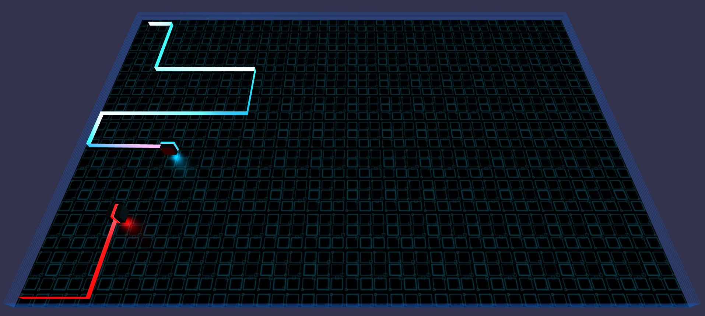

I'm a computer scientist. Graduated from Tecnológico de Monterrey in December 2016. I speak both English and Spanish fluently, and a tiny bit of esperanto (because why not?). On my free time I enjoy twisty puzzles, juggling, video games and pokémon hunting.
Here are some of the projects I've worked on during my time as a student.
A web based real-time multiplayer game using Angular, NodeJS, websockets and MongoDB. Abusing the fact that wikipedia is a huge graph of linked pages, the game challenges you to reach a random page from another using the last amount of links possible. All of this can be done while competing with others. You can try the concept by using the old version found here.

Real time web multiplayer game using websockets and webgl. Babylon was used as a library for webgl. A small experiment mimicking the tron bike game.
Part of a bigger application. This microservice keeps track of habits on a task and habit building application. This microservice was built using the MongoDB, NodeJS and Express. It works by exposing a REST API for other services to use.
Web based game for twisty puzzle entuciast. Keeps track of scores related to each solve: time and moves.
Users can see themselves on leaderboards and share a simulation of their solve. However, the fun in the project
comes from the simulation itself. It defines a puzzle in the most general sense as a set of axises that act
on the pieces in its viccinity, which can be shared with other axis, allowing it to be used to simulate many types of
puzzles.
Server was built using MongoDB, Express and NodeJS. While the simulations uses ThreeJS to interact with WebGL.